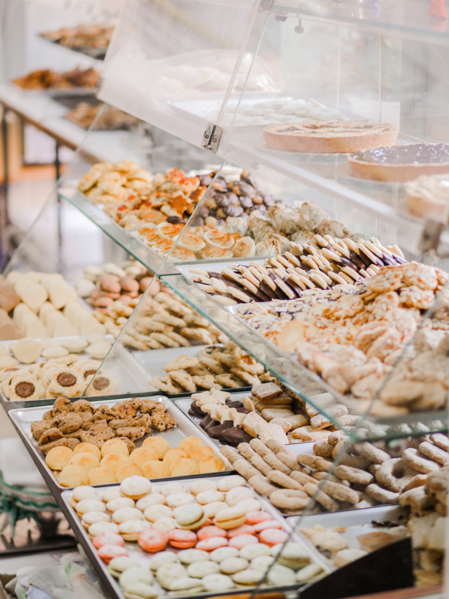
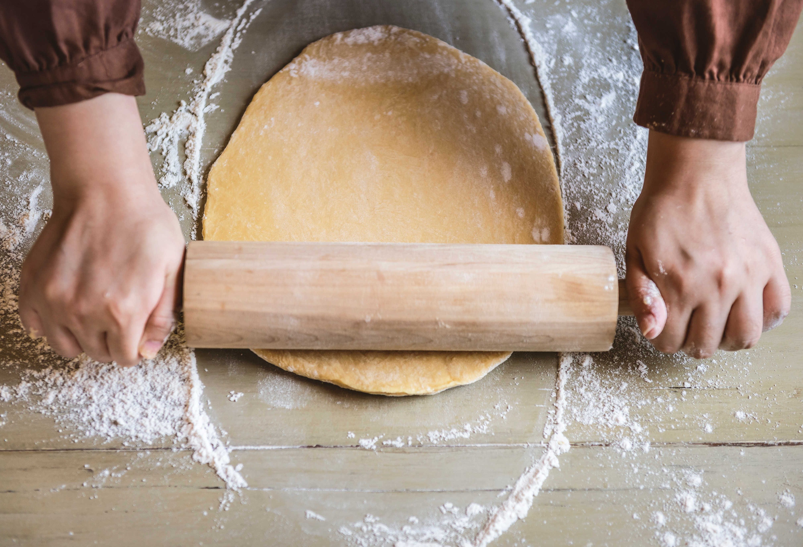

Ma passion pour la pâtisserie
J'ai créee ce blog, pour parler de ma passion, la pâtisserie.J'ai toujours adorée cuisiner, et principalement faire des...
Des recettes de boulangerie viennoiseries et pains , baguettes et pains spéciaux et aromatiques, ainsi que divers essais : cup cakes , desserts apéro ,plat ,smoothies ,tartes
J'ai créee ce blog, pour parler de ma passion, la pâtisserie.J'ai toujours adorée cuisiner, et principalement faire des...
Le macaron a des goûts et des couleurs différentes. Généralement, le macaron rose est à la fraise ou à la framboise. Le macaron beige est à la vanille. Le macaron marron est au chocolat ou au café...

C’est une des tartes préférées à la maison parce qu’elle allie fraîcheur, saveur acidulée et douceur avec juste un peu de peps que lui donnent les morceaux de suprêmes de citron...